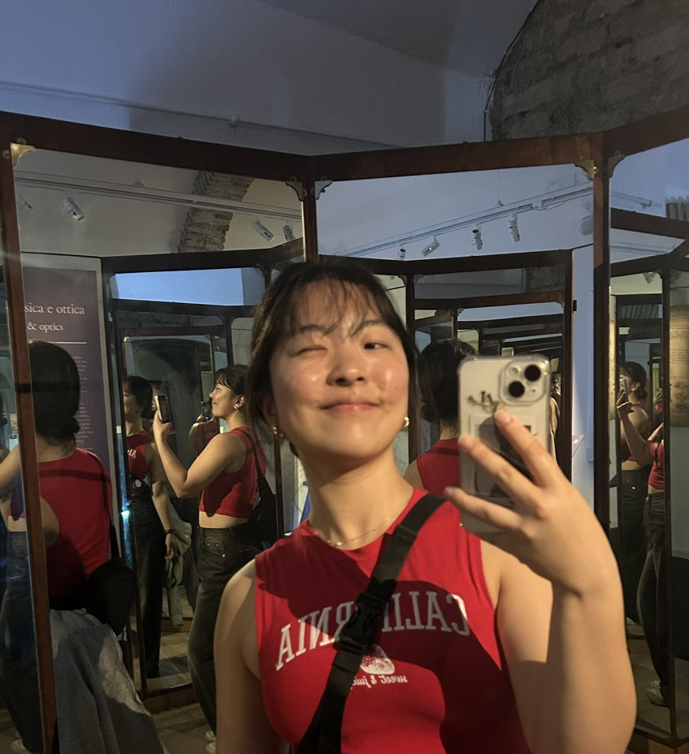

<div class="textcontainer">
<h3>About Me</h3>
<p class="margin"> </p>
<div class="center-row">

<p id="aboutme">
Hello! My name is Ellie Yin, and I'm a senior in Kirkland House studying CS with a secondary in Sociology! I'm originally from the East Bay Area in California, and I love traveling to new places, getting new movie + book recommendations (please send them my way), and playing tennis as well as snowboarding. It's been a dream of mine to learn how to be a generalist and make cool things with my hands, so I'm super excited to finally be able to take this class and learn all about building this semester! :D
<br></br>
Fun fact: this photo was taken at the Mirror Room in the Leonardo da Vinci Machines Exhibition in Rome! Very fitting.
</p>
</div>
<br></br>
</div>